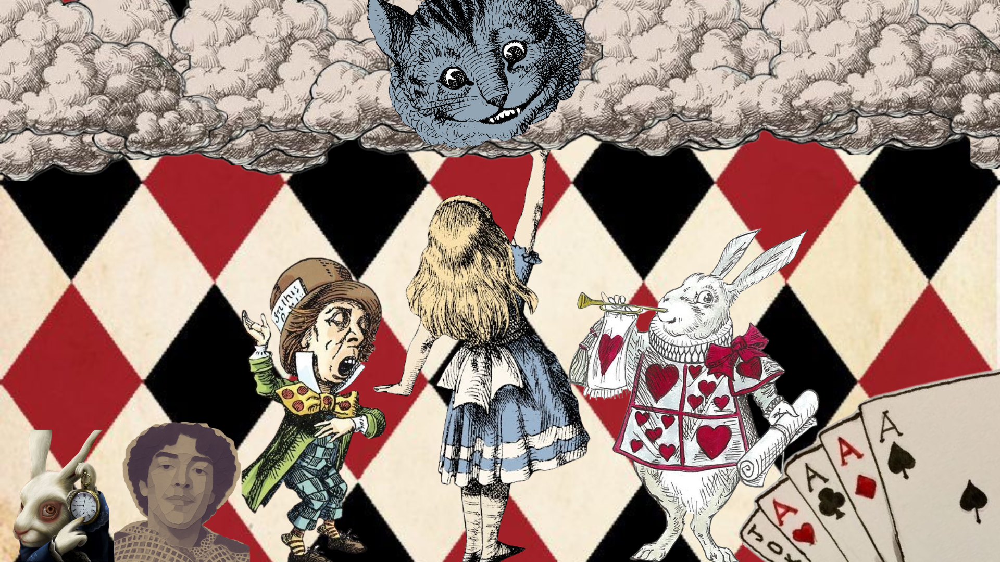

Nossas resenhas · Todos são loucos aqui?
Alice no País das Maravilhas
Uma análise Contra-Capa
Enredo
Enquanto passa o tempo com sua irmã, Alice vê um Coelho Branco de colete e relógio de bolso. Surpresa, segue-o até a toca e cai por um longo poço, cujas paredes estão repletas de prateleiras, objetos estranhos, quadros e livros. Ao chegar ao fundo, encontra-se em uma sala com uma pequena porta trancada. Depois de conseguir sair, começa sua aventura pelo País das Maravilhas, onde encontra cenas surreais, dilemas sobre sua identidade e figuras icônicas.
Por que você deve ler
Embora pareça, à primeira vista, um livro infantil, Alice no País das Maravilhas é uma aventura profunda pelo subconsciente e pela identidade. A obra questiona quem somos, para onde vamos e o que queremos. Seus personagens funcionam como metáforas de diferentes aspectos da psique e da essência humana.
